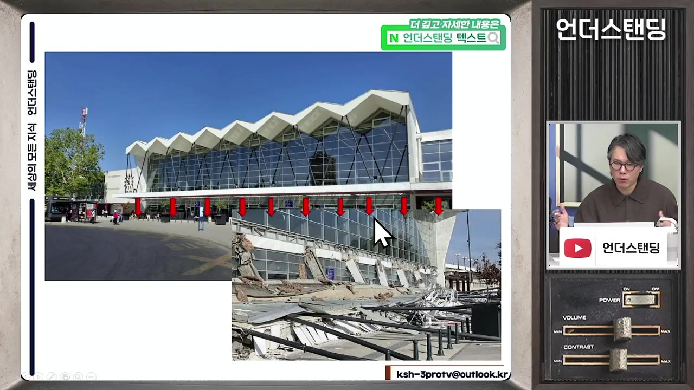
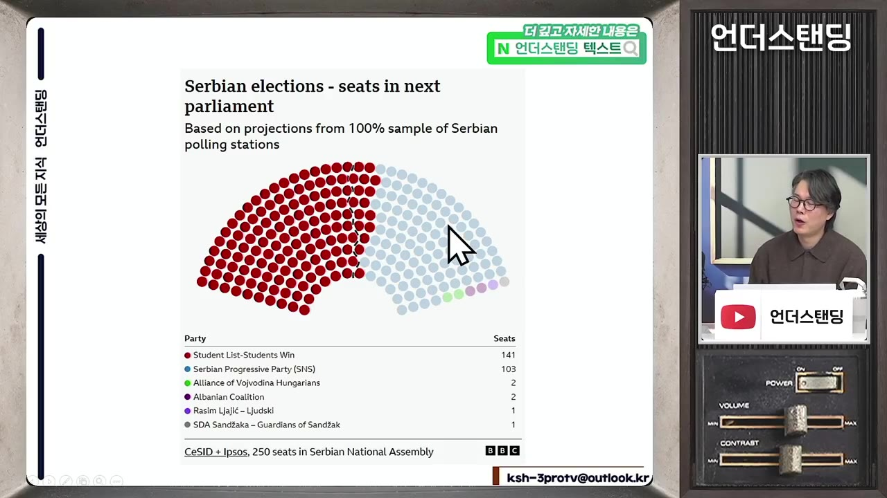
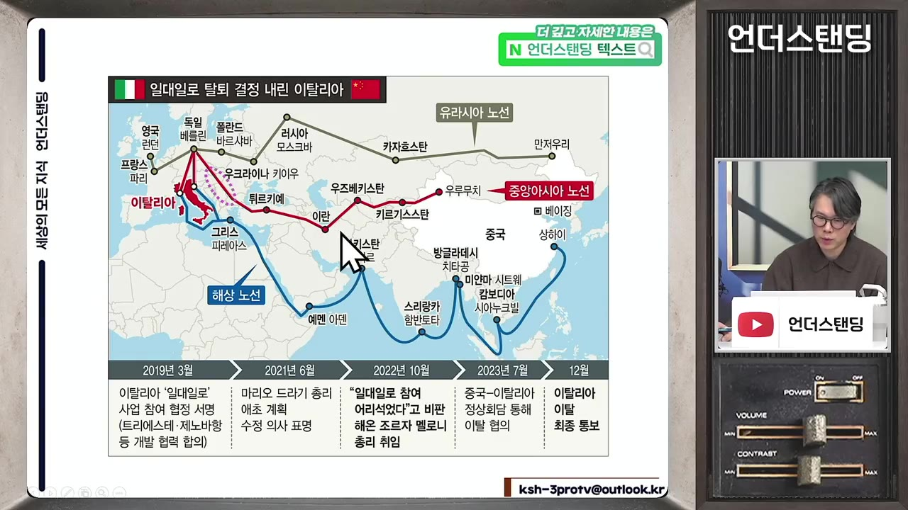
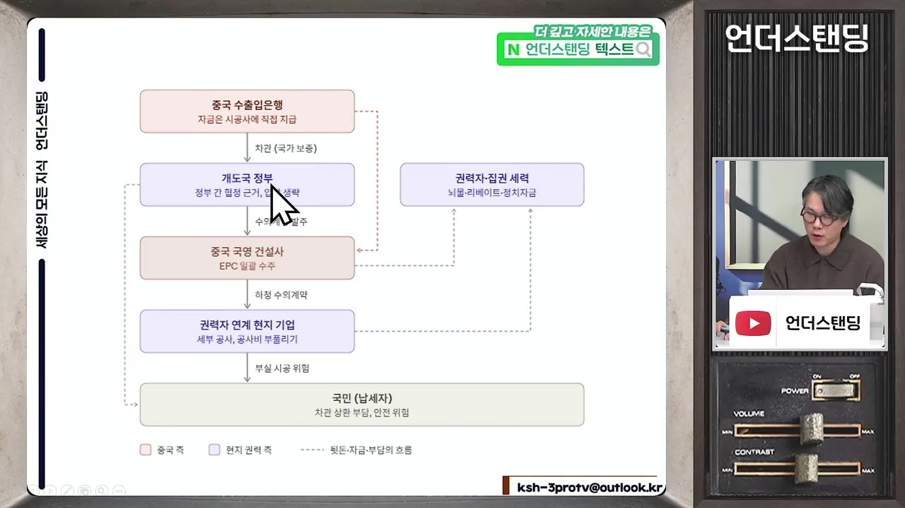
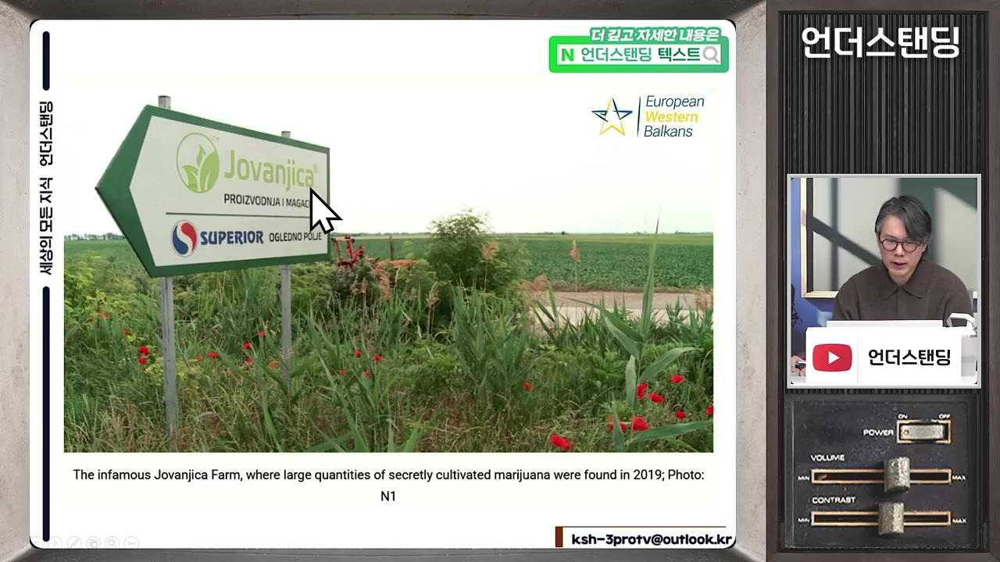
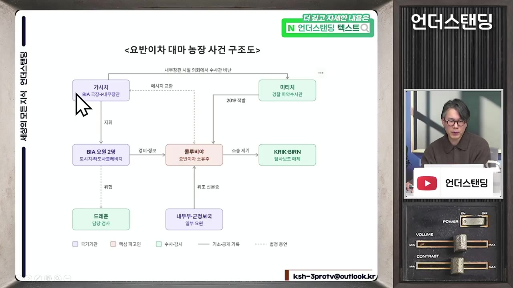
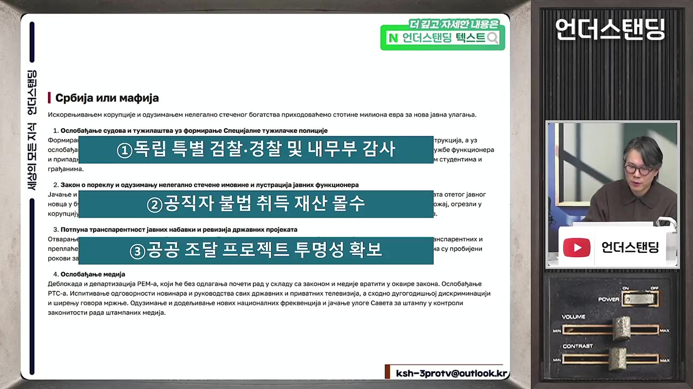

중국이 지은 세르비아 기차역 무너져 16명 숨져. "비밀 계약이라 공개 못 한다"던 세르비아 친중 정권의 몰락 (언더스탠딩 김상훈 기자)
▶ 원본 영상 보기한눈에 보기
- 2024년 11월 세르비아 노비사드 기차역에서 리모델링을 마친 지 4개월 된 캐노피(차양 구조물)가 무너져 16명이 숨졌고, 정부는 "중국과의 비밀 유지 조항"을 이유로 계약서 공개를 거부했습니다.
- 계약서 공개 요구로 시작된 시위가 시위 학생 폭행 사건 뒤 전국으로 번졌습니다. 영상에 따르면 학생들이 추천한 무소속 후보 250명 가운데 141명이 당선돼 14년 이어진 부치치 정권이 무너졌습니다.
- 영상의 핵심 주장은 이렇습니다. 일대일로는 "중국 차관 → 경쟁 입찰 없는 중국 수주 → 권력자 측근 하청" 구조로 짜여 있어서, 부패한 정권과 만나면 이권 통로가 되기 쉽습니다.
- 대마 농장 비호 의혹과 탄약 헐값 거래 의혹처럼 정권 핵심이 얽힌 비리가 겹쳐 민심이 돌아섰습니다. 헝가리 오르반 정권에서도 비슷한 철도 계약 의혹이 있었습니다.
- 학생 세력은 정당과 지도부 없이 '규칙만 있는' 정치를 내세웠습니다. 다만 구심점이 없어 국정을 운영하기 어렵고 중국의 로비 대상이 될 수 있다는 과제가 남았습니다.
이런 분께 도움이 됩니다
- 일대일로가 개발도상국에서 실제로 어떻게 돌아가는지 구체적인 사례로 알고 싶은 분
- 2026년 세르비아·헝가리의 정권 교체가 중국의 유럽 전략에 어떤 의미인지 궁금한 분
- 정당 없는 시민 정치 실험이 어떤 가능성과 위험을 가졌는지 생각해 보고 싶은 분
핵심 내용
세르비아 정권 교체가 왜 주목받나
- 14년 장기 집권한 알렉산다르 부치치 정권이 폭력 없는 학생 시위와 선거로 무너졌습니다. 외신이 '이례적인 케이스'로 크게 다루고 있습니다. (1:44)
- 이웃 헝가리에서도 지난 4월 16년 집권한 빅토르 오르반 정권이 선거로 바뀌었습니다.
- 김상훈 기자는 이 일을 세 가지 면에서 의미 있게 봅니다. (2:50)
- 중국 일대일로가 저개발국을 어떻게 병들게 하는지 보여 주는 사례
- 세르비아는 발칸반도의 핵심이라, EU 통합으로 가는 분기점이 되면 중국의 유럽 일대일로가 위기를 맞을 수 있음
- 정당 없는 정치라는, 대의민주주의 문제의 새 해법을 시험하는 사례
💡 학생 시위 한 번으로 끝난 일이 아니라, 일대일로 구조와 유럽 내 친중 거점이 함께 흔들린 사건이라는 것이 영상의 시각입니다.
사건의 흐름: 기차역 붕괴에서 정권 교체까지
- 역사 리모델링
- 캐노피 붕괴
- 책임 회피
- 계약서 비공개
- 학생 습격
- 전국 시위·조기 총선
- 학생 명부 출마
- 과반 당선
- 1역사 리모델링
2021년 노비사드 중앙역 개보수를 시작해 2024년 7월 끝냈습니다. 베오그라드–부다페스트 고속철도(일대일로) 공사와 함께 진행됐습니다. (6:59)
- 2캐노피 붕괴
2024년 11월 역 입구의 캐노피가 내려앉아 14명이 그 자리에서 숨지고 부상자 2명이 나중에 숨져 모두 16명이 사망했습니다. (4:25)

역 입구 캐노피가 통째로 무너져 내린 잔해 사진 · ▶ 4:43 - 3책임 회피
당시 건설교통부 장관은 "캐노피는 리모델링 대상이 아니었다"고 했습니다. 하지만 주민들이 보기에 캐노피는 공사 때 새로 생긴 것이었습니다. (8:04)
- 4계약서 비공개
시민들이 계약서 공개를 요구하자 정부는 "중국과의 비밀 유지 조항 때문에 공개할 수 없다"고 답했습니다. 시위대가 처음 요구한 것은 중국 규탄이 아니라 책임 소재를 밝히는 일이었습니다.
- 5학생 습격
베오그라드로 시위가 번지자 신원을 알 수 없는 사람들이 학생들을 공격해 응급실로 실려 간 학생도 있었습니다. 습격자는 집권 여당 당직자나 관계자로 추정됩니다.
- 6전국 시위·조기 총선
시위가 전국으로 커졌습니다. 부치치는 대통령 임기 1년을 남기고 조기 총선을 받아들였는데, 대통령 연임 제한을 피해 총리로 권력을 이어 가려는 계산으로 해석됩니다.
- 7학생 명부 출마
학생들은 정당을 만들지 않고, 학생들이 직접 검증한 250명을 '학생 명부'로 선거에 등록했습니다.
- 8과반 당선
250명 가운데 141명이 당선돼 과반을 차지했습니다.

의석 예측 그래프: Student List 141석, SNS 103석 · ▶ 12:21
- 세르비아는 이원집정부제여서 대통령과 총리가 권한을 나눠 가집니다. 그래서 '총리로 내려가기'가 실제로 권력을 유지하는 수단이 됩니다.
일대일로가 부패의 통로가 되는 구조
- 세르비아는 터키와 발칸을 지나 헝가리, 독일로 가는 일대일로 철도의 길목입니다. 중국이 남동부 유럽에 쓰는 일대일로 자금의 약 43%가 세르비아에 몰려 있습니다. (5:42, 6:00)

- 베오그라드–부다페스트 고속철도의 세르비아 구간은 약 180km입니다. 세 구간으로 나눠 발주했고 한 구간은 러시아, 나머지는 중국이 맡았습니다. 공사비 약 15억 달러 가운데 약 85%(13억 달러)를 중국 차관으로 빌렸습니다. (18:30)
- 차관은 이자까지 붙여 세금으로 갚아야 합니다.
- 일대일로 협정은 집권당이 장악한 세르비아 의회와 맺은 일종의 국제 조약이라 국내법보다 우선합니다. 비밀 유지 조항으로 계약서를 감출 수 있었던 근거가 이것입니다.
- EU 회원국은 국가 발주 사업에 경쟁 입찰을 의무로 붙여야 하지만, 세르비아는 비회원국이라 이 규정을 따르지 않아도 됩니다.
- 차관 제공
- 수의 계약
- 중국 일괄 수주
- 현지 하청
- 뒷주머니
- 1차관 제공
중국 수출입은행이 개발도상국 인프라 공사비를 빌려줍니다.
- 2수의 계약
경쟁 입찰에서 조건을 비교하지 않고, 처음부터 중국 기업으로 정해 둡니다.
- 3중국 일괄 수주
중국 공기업이 공사 전체를 따 갑니다.
- 4현지 하청
세부 공사를 권력자와 연결된 현지 업체에 공사비를 부풀려 맡깁니다.
- 5뒷주머니
부풀린 차액이 권력자 측근에게 돌아가고, 빚은 국민 세금으로 갚습니다.

중국 수출입은행→개도국 정부→중국 국영 건설사→권력자 연계 현지 기업 구조도 · ▶ 24:39
- 노비사드 사건도 이 구조로 추정된다는 것이 세르비아 안의 시각입니다(수사로 밝혀진 것은 아님). 계약서를 공개하면 권력자 측근 기업이 드러나기 때문에 감춘 것이라는 의심입니다.
- 중국 쪽 입장: 캐노피 공사는 "우리 계약 범위가 아니다." 영상도 법률이나 계약상으로는 중국 잘못이 없다고 봅니다.
- 비밀 유지 조항은 중국이 요구했다기보다 부패한 정권이 원했을 것이라는 것이 기자의 판단입니다.
💡 중국이 부패를 강요하지는 않았지만, 불투명한 돈을 흘려보내면 부패한 정권과 맞물려 이권 통로가 될 수밖에 없다는 주장입니다.
부치치 정권의 다른 비리 의혹
- 요바니차(Jovanjica) 대마 농장 사건: 유기농 식품 기업으로 알려진 회사의 소유주 콜루비아가 음주 난폭 운전으로 체포됐습니다. 그의 차에서 보안정보국 신분증(위조)이 나왔고, 농장을 덮치자 역사상 최대 규모의 대마가 나왔습니다. (14:17)

- 내무부, 보안정보국, 군정보국이 뒤를 봐줬다는 의혹이 있고, 대통령의 형도 연루됐다는 의혹이 나왔습니다.
- 사건을 덮은 방식 (16:53)
- 수사하던 경찰관을 오히려 체포했습니다.
- 후견인으로 의심받던 보안정보국장은 내무부 장관이 된 뒤 "경찰이 조작했다"고 주장했고, 지금은 국방부 장관입니다.
- 정부가 장악한 지상파 방송에 마약상의 변호인이 나와 "조작된 사건"이라고 했고, 탐사 보도 기자는 소송을 당했습니다.
- 7년이 지난 지금도 사건의 실체가 밝혀지지 않았습니다.

- 탄약 헐값 거래 의혹: 국영 탄약 공장의 포탄을 내무부 장관의 아버지가 고위직으로 일하는 회사가 원가 수준에 사들여 사우디아라비아에 비싸게 팔았다는 의혹입니다. 내부 고발자는 오히려 영업 비밀 누설로 체포됐고, 그 아버지가 숨지면서 사건이 흐지부지됐습니다. (21:34)
💡 시민들이 문제 삼은 것은 '친중'이 아니라 '세금을 뒷주머니로 빼 가는 통로가 너무 많다'는 점입니다.
헝가리에서도 같은 일
- 헝가리 구간 철도도 공사비가 약 18억 달러로 비슷하고, 중국 차관을 국민 세금으로 갚는 구조입니다. 형식상으로는 경쟁 입찰을 거쳤습니다. (26:05)
- 계약에 '타당성 조사(사업비와 수익 예측)와 계약 내용은 10년간 비밀'이라는 조항이 들어갔습니다. (26:39)
- 알고 보니 수주 컨소시엄 지분의 51%를 오르반 총리의 절친한 친구 기업이 가지고 있었습니다.
- 동남유럽에서 뚜렷한 친중 정권은 헝가리와 세르비아 둘뿐이었습니다. 두 곳 모두 장기 집권한 부패 정권이었고, 올해 둘 다 무너졌습니다. (28:04)
학생 세력의 개혁안과 '지도자 없는 정치'
- 학생 세력은 정당은 아니지만 11개 조항의 기준(정강)을 발표했습니다. 영상이 소개한 내용은 다음과 같습니다. (27:00)
- 독립적인 특별 검찰·경찰을 만들어 비리의 온상인 내무부를 감사
- 공직자가 불법으로 얻은 재산은 모두 몰수
- 공공 조달(국가 발주) 사업의 투명성 확보 — 일대일로 협정을 직접 겨냥
- 정당 지도부 역할을 하지 않는다

- 일반 정당과 비교하면 다음과 같습니다.
| 구분 | 일반 정당 모델 | 세르비아 학생 모델 |
|---|---|---|
| 지도부 | 당원 투표로 뽑은 지도부가 운영 | 지도자 없음, 규칙과 정강만 있음 |
| 공천 | 지도부가 공천권 행사 | 단과대별로 학생들이 후보를 추천하고 검증 |
| 홍보 | 당 조직 | 명부를 SNS로 퍼뜨림 |
| 노리는 효과 | — | 과두화(소수 권력 집중)를 원천 차단 |
- 이런 실험이 나온 배경은 2000년의 경험입니다. 시민들은 비폭력 운동으로 밀로셰비치를 몰아냈지만, 새로 들어선 권력도 다시 부패했습니다. 그래서 이번에는 아예 정당을 두지 않는 극단적인 선택을 했습니다. (31:13)
- 부치치 자신도 밀로셰비치 정권에서 정보부 장관으로 언론 장악법을 만든 인물입니다.
남은 과제와 중국의 대응
- 지도부가 없으니 "선거는 이겨도 국정을 운영할 수 있느냐"는 의문이 남습니다. 협상 상대도 분명하지 않습니다. (30:23)
- 의원 개개인이 정당에 묶여 있지 않아, 인기를 얻어 총리가 되는 사람이 다시 중국의 로비 대상이 될 수 있습니다. (31:43)
- 옛 집권 여당이 여전히 103석을 가지고 있습니다. 투표 조작과 언론 장악까지 하고도 얻은 의석이라는 것이 영상의 설명입니다. (32:51)
- 세르비아가 EU에 통합되면 일대일로의 유럽 거점이 EU 손에 넘어갑니다. 그래서 중국이 공들인 투자를 쉽게 포기하지 않을 것이라는 것이 기자의 추정입니다. 중국은 공식적으로 내정에 간섭하지 않는다는 원칙을 밝히고 있습니다.
- 서방 기업도 개발도상국에서 비슷하게 돈을 뿌립니다. 중국은 다만 그것을 더 주도면밀하게 했다는 것이 기자의 평가이고, 1차 책임은 부치치 정권에 있다고 봅니다.
기억할 숫자·인용
- 16명: 노비사드 역 캐노피 붕괴 사망자 (즉사 14명, 이후 2명)
- 2021년 → 2024년 7월 → 2024년 11월: 역 개보수 시작, 완공, 붕괴
- 43%: 중국의 남동부 유럽 일대일로 자금 가운데 세르비아 비중
- 약 180km: 베오그라드–부다페스트 고속철도 세르비아 구간 / 공사비 약 15억 달러 중 85%(13억 달러)가 중국 차관
- 약 18억 달러(약 3조 원): 철도 사업 규모 (세르비아·헝가리 각각 비슷한 수준으로 언급)
- 250명 추천 → 141명 당선, 옛 집권 여당 103석
- 14년(부치치), 16년(오르반) 장기 집권
- 10년: 헝가리 철도 계약의 타당성 조사·계약서 비밀 유지 기간 / 51%: 오르반 측근 기업의 컨소시엄 지분
- "이거는 중국과의 비밀 유지 조항 때문에 계약서를 밝힐 수가 없다." — 부치치 정권
- "일대일로가 개발도상국의 부패한 정권이랑 맞물리면 이런 효과가 생길 수밖에 없는 구조적인 문제가 생긴다." — 김상훈 기자
생각해볼 점
- 추정과 사실 구분: 노비사드 사건에서 하청을 통해 이권을 챙겼다는 구조는 수사로 밝혀진 것이 아니라 세르비아 안의 추정이라고 영상도 밝힙니다. 중국에 법적 책임이 없다는 점도 인정합니다. '중국 탓'으로 단정하기보다 '불투명한 계약 구조의 위험'으로 받아들이는 편이 정확합니다.
- 숫자가 서로 다름: 세르비아 구간 공사비가 한 번은 "약 15억 달러", 한 번은 "약 18억 달러"로 나옵니다. 철도 전체와 일부 구간의 차이인지 영상만으로는 알 수 없습니다(자막상 불분명). 인용할 때는 원자료를 확인해야 합니다.
- 지도자 없는 정치의 지속 가능성: 과두화를 막는 장점은 분명합니다. 하지만 의원 개개인이 로비에 약해지고 국정 조율이 어려워질 수 있습니다. 밀로셰비치 이후 다시 부패로 돌아간 역사가 되풀이되지 않을지는 앞으로 지켜봐야 합니다. (내 의견)
바로 해볼 일
- 노비사드 역 붕괴의 공식 조사 결과와 세르비아 새 의회 구성을 외신 기사로 확인해, 영상 속 숫자(141석, 103석)를 대조해 보기
- '베오그라드–부다페스트 철도'를 검색해 세르비아·헝가리 구간 공사비와 차관 조건이 영상과 맞는지 확인해 보기
- 우리나라나 관심 있는 나라의 대형 해외 차관 사업에도 계약 비공개 조항이 있는지 한 번 찾아보기